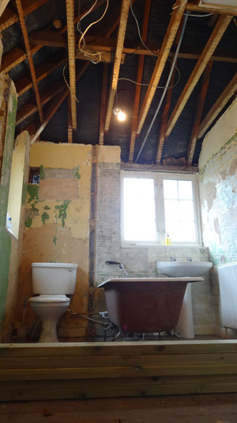
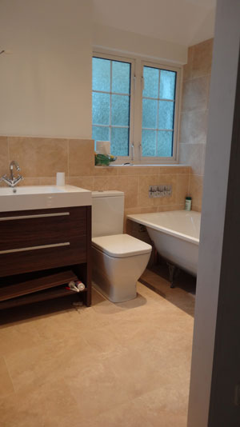
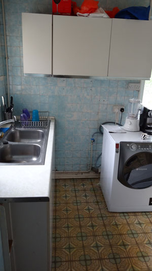
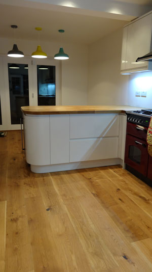

|
High Quality South London Building Contractor for all your home improvement and construction needs |
|||
|---|---|---|---|
| Before | After | Before | After |
|  |  |  |  |
We are a small Partnership of Builders in South East London, catering for any construction requirements on your home, be that loft a extension, a garden extension, a new roof or bathroom. We have completed a large variety of different projects over the past decade, from simply painting a bedroom to refurbishing whole houses.
Nothing excites us more than coming up with a new solution for a spacial concept so it fits your lifestyle and need. We are upfront and direct about costs involvevd and like to tell you the real cost before and not during the project.
We spend time with you during the planning phase as well as during construction, as we feel that communication with our clients is of great importance. We are acutely aware, that especially big projects are an invasion into your private space and have learnt that good communication is vital. We pride ourselves on keeping a clean and tidy site.
We do not employ a multitude of builders from all trades and corners of the world, but rather work with established traders with many years of experience. This way the clients gets the best of both worlds: the professional pride of a self-employed trader such as electricians and plumbers which leads to a much higher quality finished product. On the other hand our management and work in the process, which ensures you only every deal with us and not with a whole host of different tradesmen.